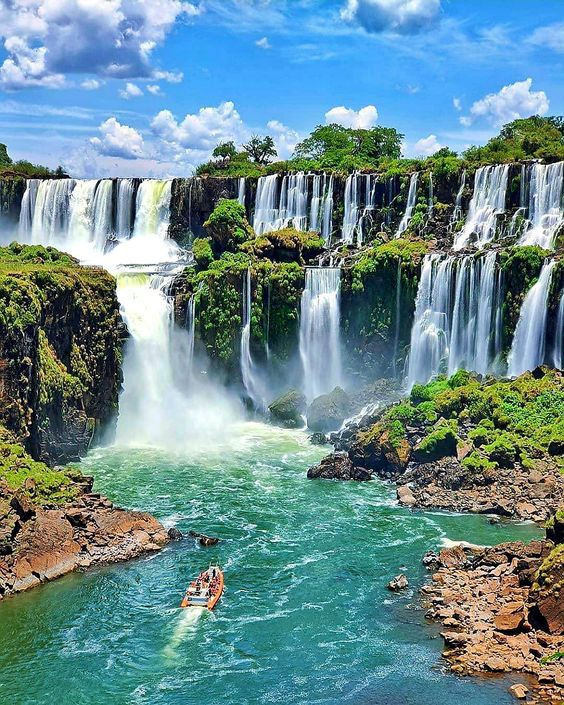
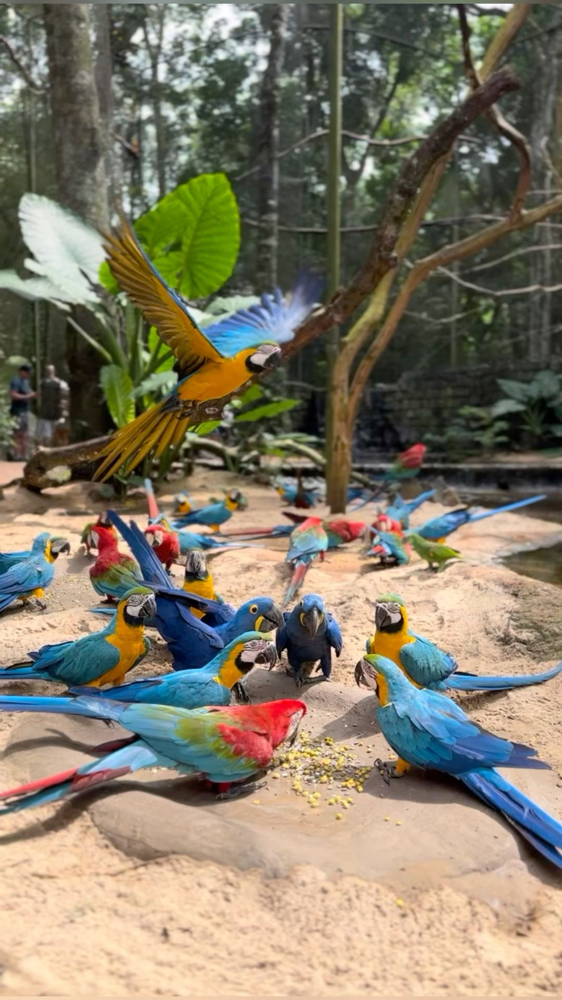
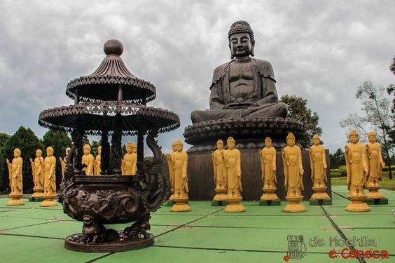

Bem-vindo ao E&J Tour
Descubra as maravilhas de Foz do Iguaçu com conforto e qualidade.
Transporte
Oferecemos transporte com motoristas experientes e veículos confortáveis.
Cataratas do Iguaçu
As Cataratas do Iguaçu são uma das Novas Sete Maravilhas da Natureza, localizadas no Parque Nacional do Iguaçu. Com mais de 270 quedas d'água, oferecem vistas espetaculares e trilhas para caminhada, como a Trilha das Cataratas e a Trilha do Poço Preto. Os passeios de barco do Macuco Safari proporcionam uma experiência emocionante ao navegar próximo às quedas.
Parque das Aves
O Parque das Aves é um santuário dedicado à conservação e reabilitação de aves nativas e exóticas. Com mais de 1.300 aves de 140 espécies diferentes, os visitantes podem caminhar por viveiros e observar aves em seus habitats naturais. O parque também oferece a oportunidade de interagir com algumas aves e aprender sobre a importância da preservação.
Itaipu Binacional
A usina hidrelétrica de Itaipu é uma das maiores do mundo e oferece vários tipos de visitas guiadas. O Circuito Especial permite que os visitantes conheçam as áreas internas da usina, enquanto a Visita Panorâmica oferece uma visão externa impressionante da barragem. À noite, o espetáculo de Iluminação da Barragem é imperdível.
Marco das Três Fronteiras
O Marco das Três Fronteiras é o ponto onde os rios Iguaçu e Paraná se encontram, marcando a divisa entre Brasil, Argentina e Paraguai. O local possui um monumento e oferece uma vista panorâmica única, além de apresentações culturais que celebram a integração entre os três países.
Templo Budista
O Templo Budista de Foz do Iguaçu é um lugar de paz e reflexão, com belos jardins e mais de 120 estátuas de Buda. A arquitetura do templo e a tranquilidade do ambiente proporcionam uma experiência espiritual enriquecedora.
Pacotes Promocionais
Pacote Aventura
Inclui visita às Cataratas, passeio de barco Macuco Safari e trilha no Parque Nacional.
Pacote Cultural
Visite o Marco das Três Fronteiras, o Templo Budista e o Parque das Aves. Inclui transporte e guia turístico.
Pacote Natureza Total
Experimente o melhor da natureza com visitas ao Parque das Aves, Cataratas do Iguaçu e passeio na Itaipu Binacional.
Compras Paraguai
Pacote perfeito para quem quer viver uma experiência única em Ciudad del Este. Com este pacote, terá acesso a um serviço especializado, atendimento de excelência e uma experiência de compras prática e agradável.
Passeio Argentina
Explore os principais pontos turísticos da região, como as deslumbrantes Cataratas da Argentina, o emblemático Marco das Três Fronteiras, a animada feira argentina e as imperdíveis oportunidades de compras Duty free.